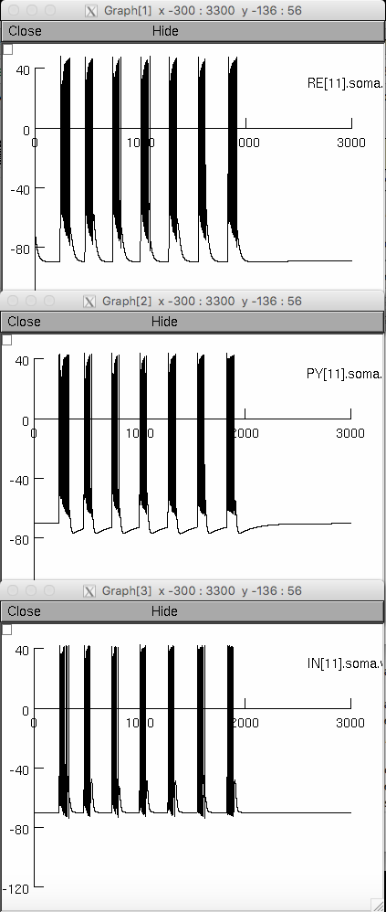

This is the README for the NEURON code used to generate the results in the paper: Knox A, Glauser T, Tenney T, Lytton W, Holland K, Modeling pathogenesis and treatment response in childhood absence epilepsy, Epilepsia 2017, doi: 10.1111/epi.13962
This is an implementation of the model described in the paper: Destexhe, Alain, Spike-and-Wave Oscillations Based on the Properties of GABAB Receptors, The Journal of Neuroscience, November 1, 1998, 18(21):9099-9111
The bulk of the implementation was taken from Thalamocortical and Thalamic Reticular Network (Destexhe et al 1996, ModelDB Acession:3343), including the bulk of the mechanisms (some modifications were made to GABA-A, GABA-B, and AMPA receptors to optimize performance). The program file FSpikeWave.oc was created by modifying the file Fspin.oc from to create the four layer network described in the paper listed above, with various other functions added. As far as I can tell it is true to the original Destexhe Spike-and-Wave Oscillation model, although it may be that a slightly different implementation of GABA-B receptors was used in the original, leading to some discrepencies with the frequency of spike and wave oscillations.
The code can be run in the NEURON simulation environment, which can be found at https://www.neuron.yale.edu/neuron/ If you need more help than provided below, please consult this web page:
https://senselab.med.yale.edu/ModelDB/NEURON_DwnldGuide.cshtmlTo recreate figures from figure 2 of the Knox paper, do the following:
1) download and extract the zip file.
2) use mknrndll (windows) or nrnivmodl (unix and mac) to compile the mod files.
3) Open rundemo.mod in NEURON and select "3Hz Spike and Wave," then click init and run to run the simulation

Code is provided as-is, and some aspects of implementation may be counter-intuitive (such as some details of the implementation of GABA-B receptors). Feel free to contact me with questions.
Andrew Knox
Department of Neurology
University of Wisconsin
Knox@neurology.wisc.edu
The bulk of this work was completed while I was a child neurology resident and epilepsy fellow at Cincinnati Children's Hospital Medical Center.